网络流量分类器
读取 pcap/pcapng 或实时网卡数据，解析协议头部，按五元组聚合网络流，提取统计特征，用规则和 KNN 判断流量类别，并对攻击流量报警。
342KNN 训练样本
3训练类别：DNS / ICMP / Web
42,749Web 样本解析包数
105100 包样本实际解析包数
读取 pcap/pcapng 或实时网卡数据，解析协议头部，按五元组聚合网络流，提取统计特征，用规则和 KNN 判断流量类别，并对攻击流量报警。
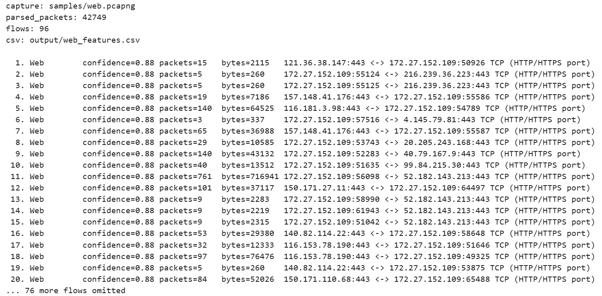
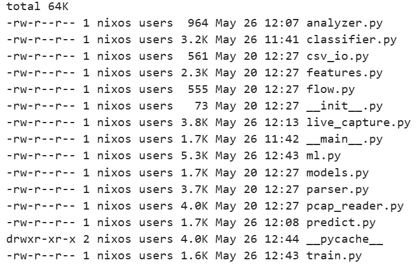
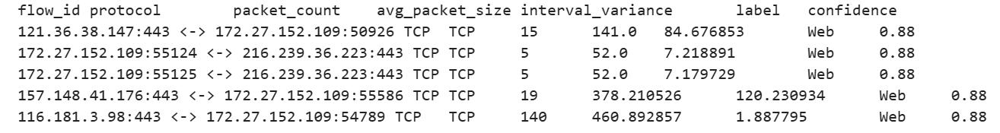
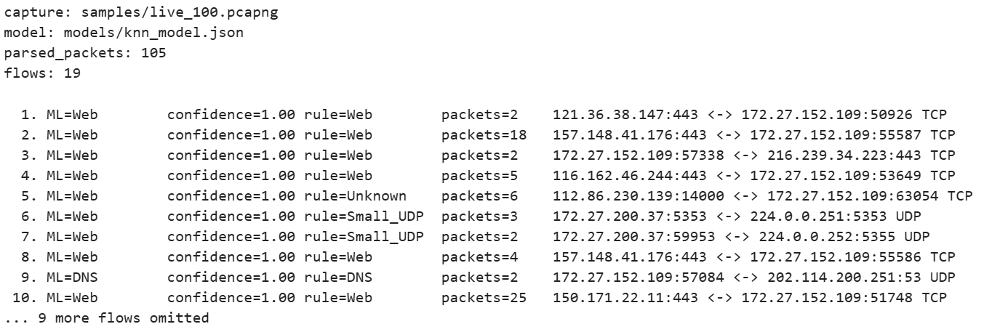
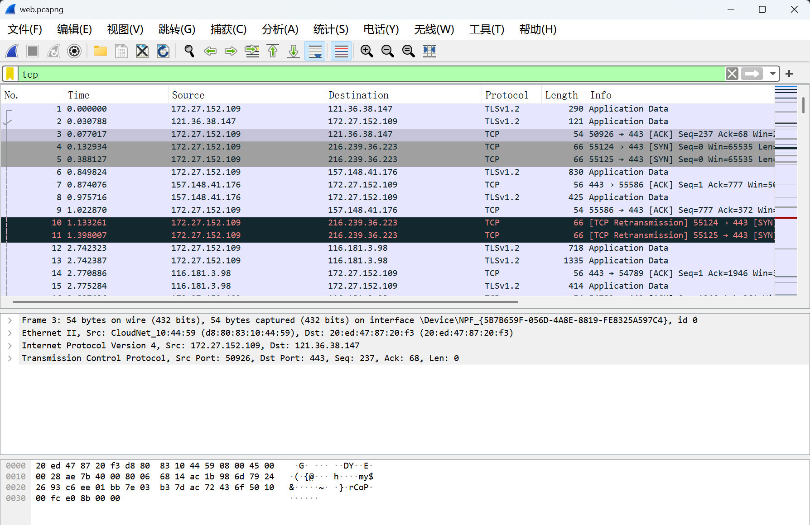
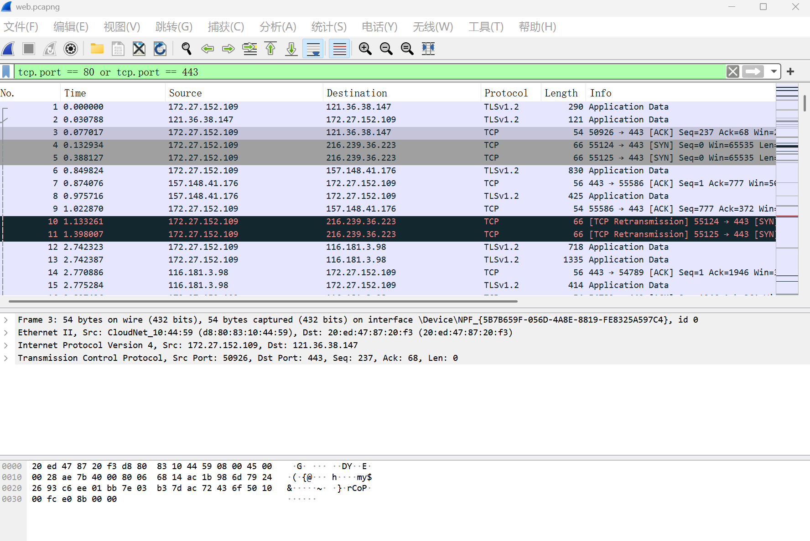
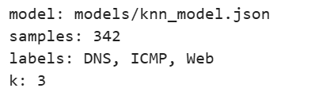
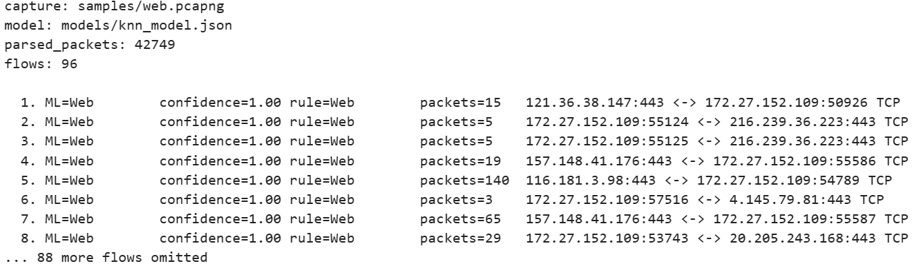
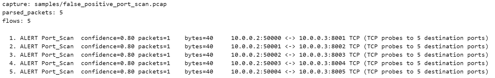
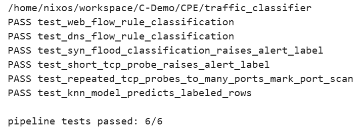
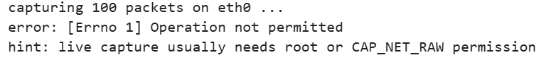
| 项目部分 | 完成情况 |
|---|---|
| 流量分析链路 | 完成 pcap/pcapng 读取、协议解析、五元组聚合和 CSV 特征输出 |
| 协议理解展示 | 结合 Wireshark 截图说明 HTTP/HTTPS 的五层封装与解封装 |
| 模型分类能力 | 完成 KNN 训练、模型保存、模型加载和预测结果输出 |
| 拓展功能 | 实现 SYN Flood、TCP Probe、Port Scan 报警，并完成真实样本采集 |